Multimodal generation
Generative models for high-quality, controllable image and video synthesis, including diffusion and unified generative models.
I build generative models that understand, reason, and create across modalities. I am a final-year Ph.D. candidate at MMLab, CUHK, advised by Prof. Hongsheng Li and Prof. Xiaogang Wang, and currently a Research Intern at ByteDance Seed. My current research focuses on agentic visual generation and autoregressive video generation.
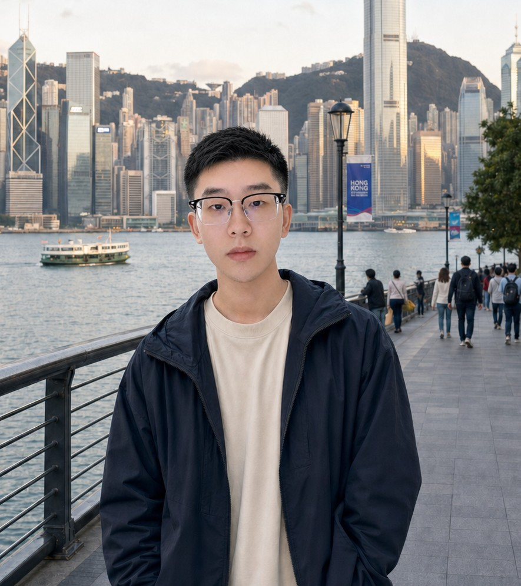
Generative models for high-quality, controllable image and video synthesis, including diffusion and unified generative models.
Multimodal large language models that perceive diverse visual inputs and reason over complex multimodal content.
Scalable visual representation learning, model architectures, and efficient training for general-purpose vision systems.
Research Intern · Seed Vision · Mentor: Liyang Liu
Working on enhancing Seedream's agentic generation capabilities.
Research Intern · Interaction Model R&D · Mentor: Mingjie Zhan
Designed visual output capabilities for interactive foundation models, with an emphasis on real-time, synchronized, and high-fidelity audio-video generation.
Research Intern · Base Model R&D · Mentors: Guanglu Song & Yu Liu
Researched diffusion models, multimodal LLMs, and large vision foundation models. A core founding member of frontier R&D projects including a large vision foundation model, a multimodal interactive model, and SenseMirage.
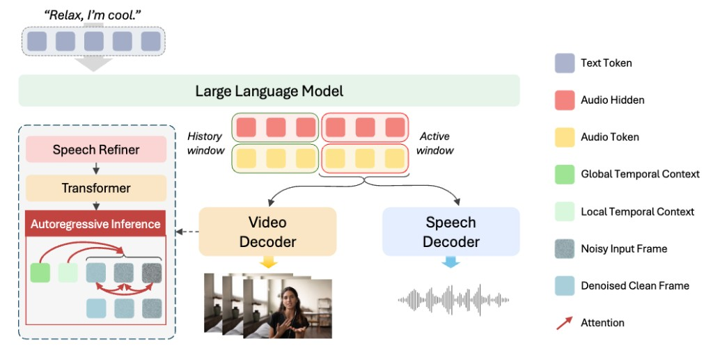
A unified autoregressive framework for synchronized talking audio-video generation.
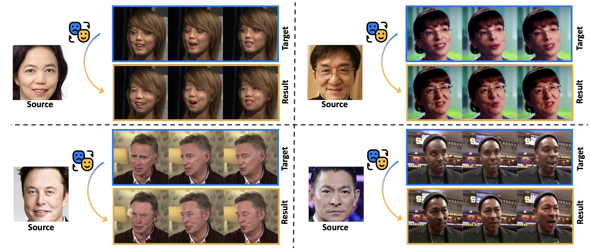
Hybrid diffusion training and 3D reconstruction for identity-preserving, temporally consistent video face swapping.

A generalist multimodal LLM that models consistent visual elements from diverse groups of reference images.
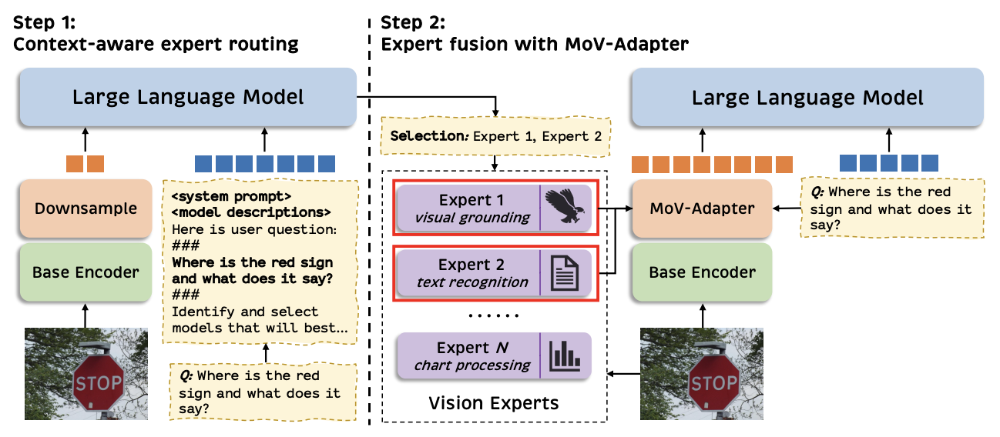
A coarse-to-fine routing mechanism that adaptively fuses task-specific vision experts for multimodal language models.
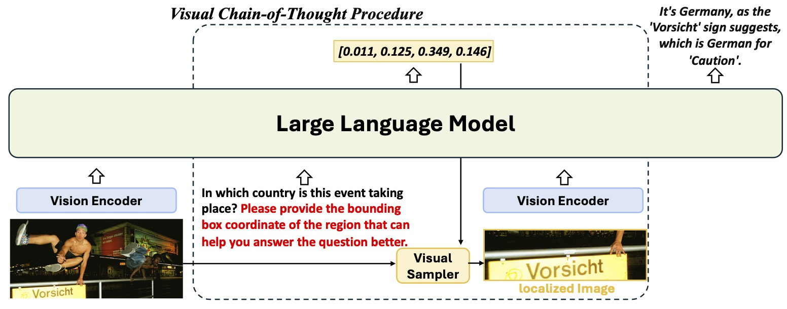
A dataset, benchmark, and pipeline for interpretable visual chain-of-thought reasoning over complex inputs.
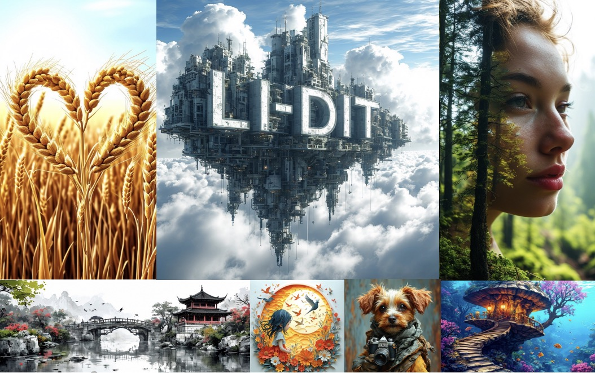
Unleashing LLM prompt encoding for text-to-image diffusion models, powering core technology in SenseMirage.

A text-only fine-tuning strategy that improves concept-level alignment in text-to-image diffusion models.
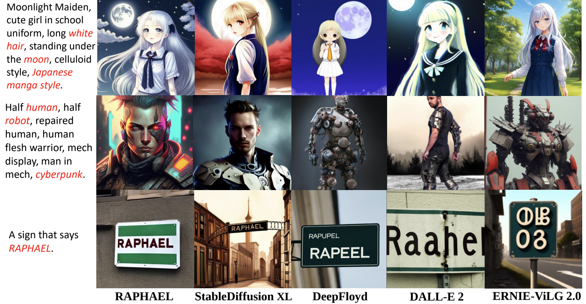
Space- and time-MoE layers for highly scalable text-to-image generation, also powering SenseMirage.
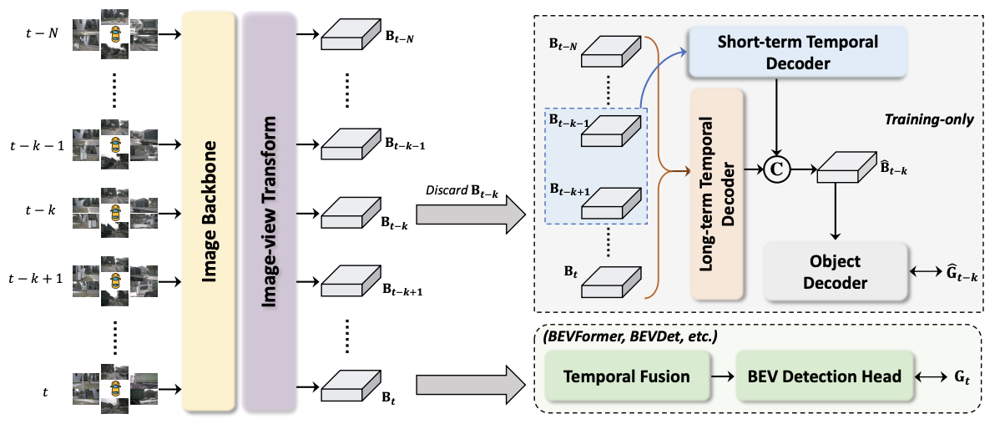
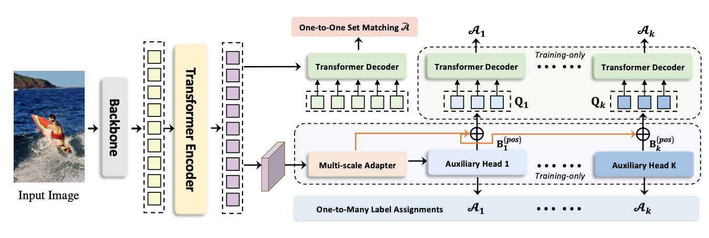
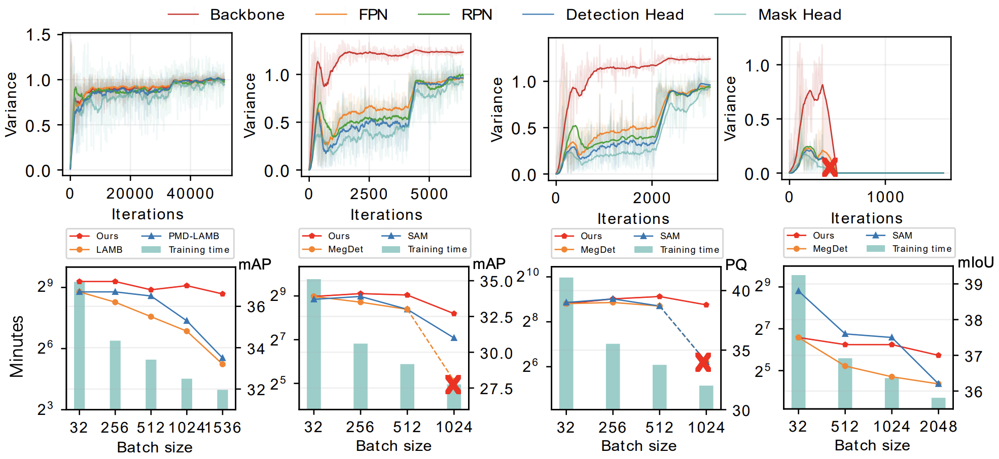
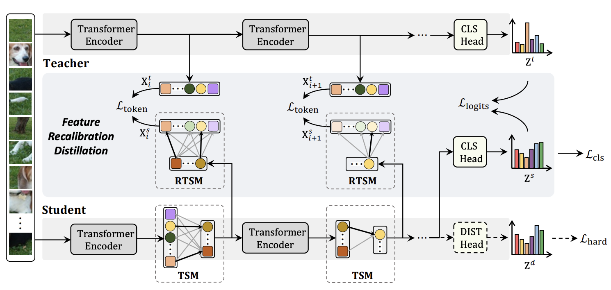
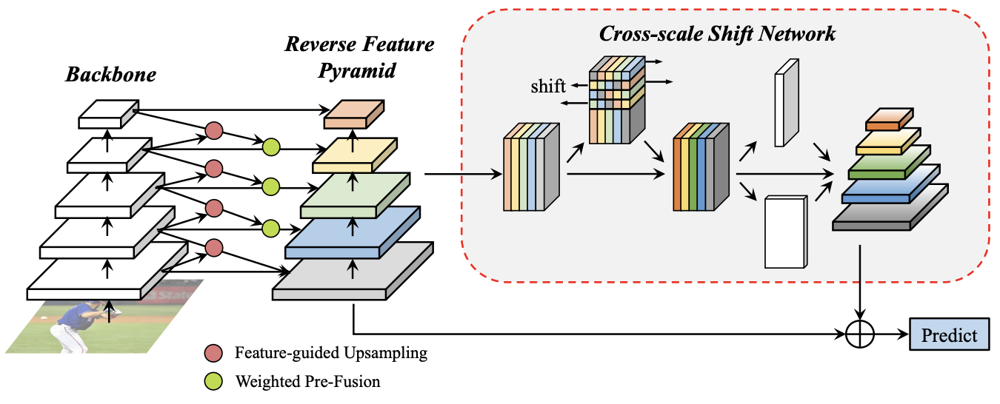
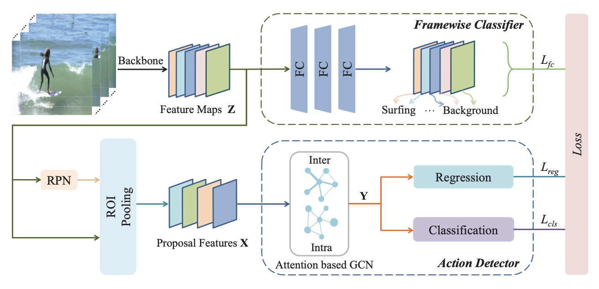
* Equal contribution. Author lists are abbreviated only where shown.
Ph.D. in Electronic Engineering · MMLab
Aug 2023 — Jul 2027 (expected) · Advisors: Prof. Hongsheng Li and Prof. Xiaogang Wang
MPhil in Computer Technology
Aug 2020 — Jan 2023 · Advisor: Prof. Biao Leng
BEng in Computer Science and Engineering
Aug 2016 — Jun 2020 · Advisors: Prof. Biao Leng & Prof. Xianglong Liu